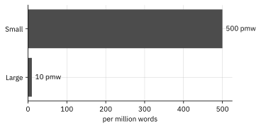
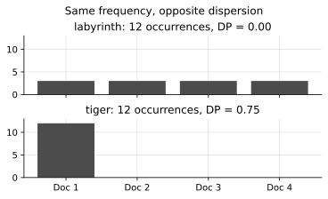
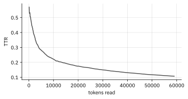
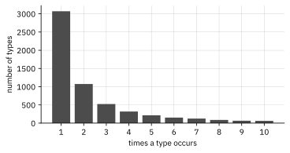
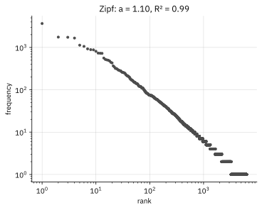
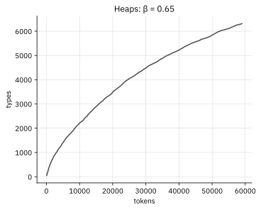
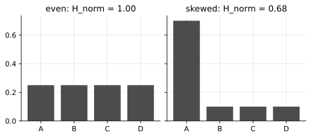
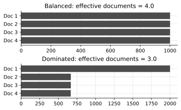

Concepts
Overview
How to read this section
flowchart TD
Q1["What is
in it?"] --> Q2["What shape
does it have?"]
Q2 --> Q3["Where are the
patterns located?"]
Q3 --> Q4["What limits
the evidence?"]
Q4 --> Q5["What can we
responsibly ask next?"]
Q5 -.->|then| N["Inference needs a
specified comparison,
model, uncertainty,
and a bounded claim"]
CorpusWright treats the description of a corpus as the first stage of statistical analysis, not a preliminary to it: exploratory data analysis (Tukey, 1977) done as exploratory data analysis, kept distinct from confirmatory inference. The position, and the principles behind it, are stated on the About page; this section does the explaining.
It is also why the Overview is large. Its length is intentional: the page is built to inform, a comprehensive diagnostic view rather than a display of what CorpusWright can do. Each panel answers a specific question that should be asked of a corpus before trusting anything built on top of it: whether it is the size it is assumed to be, whether its vocabulary is varied or repetitive, whether words are spread across the whole corpus or concentrated in a small number of texts, and whether it is still acquiring new word forms or has stabilised. Every measure on that page exists to make one of those questions properly answerable.
None of the mathematics here is new - Zipf (1949), Shannon (1948) - and the page does not pretend otherwise; the About page says in what limited sense the tool is modern.
Three commitments run underneath everything below. They are worth stating up front, because they decide how every section is written.
First: describe before you compare. Exploration precedes confirmation: a corpus is understood on its own terms before it is set against any other. Most of what follows is therefore descriptive by design - the groundwork on which any later comparison must rest.
Second: no measure stands alone. Frequency is read alongside dispersion, diversity alongside length, the rank-frequency curve before any number built upon it. Every section that follows interprets each measure in concert with the others that give it meaning, because a figure taken in isolation is the easiest of all to misread.
Third, and this one underwrites the other two: a count is only ever as trustworthy as the definition of the thing being counted. Change what a "token" is and every number on this page changes with it. The token definition is therefore the starting point.
How the workbench treats your text
flowchart TD
A["Source
text"] --> B["Extract
text"]
B --> C["Detect
artefacts"]
C --> D["Human
review"]
D --> E["Saved cleaning
rules"]
E --> F["Build
corpus"]
F --> G["Inspect
diagnostics"]
G --> H{"Looks
right?"}
H -->|revise| D
H -->|yes| I["Analysis"]
E -.->|re-run| F
One more piece of ground to clear before the measures: what the Prepare layer has done to the text by the time anything is counted. Cleaning is deterministic - saved rules replay identically on every run, and the configuration is part of the research record. Detected artefacts are candidates, not deletions: nothing is removed without explicit review, and uncertain cases keep the original text. Where the source format permits, a PDF is read as a paged document, so headers and footers are recognised as page structure rather than running text. And cleaning, concordance inspection, and frequency analysis operate in one continuous workflow, so the effect of a cleaning decision can be checked at the points where it becomes visible. The stance behind these defaults lives on the About page; here they are facts to rely on when reading the numbers.
Tokens and types - why the definition comes first
A token is a single running occurrence of a word. A type is a distinct word form. Take In the labyrinth of the library, the tiger sleeps.: nine tokens but seven types, because the turns up three times. A lemma goes one step further and gathers inflected forms under a single headword: go, goes, going, went - four word forms, one lemma.
This may appear to be mere bookkeeping, but it is methodologically fundamental. Every measure below - frequency, diversity, dispersion, and the shape of the overall distribution - is computed over tokens and types. So the question that comes first is “what counts as a token in the first place?”, well before any question about the frequency of X.
That question is not trivial. Do you fold case, so that The and the are the same type? What becomes of punctuation, of hyphenated compounds, of clitics like don't, of numerals? Every one of those choices ripples through the counts downstream.
CorpusWright's answer is to use one canonical tokeniser - Unicode UAX #29 word boundaries - shared between the Prepare layer and the Analyse layer. UAX #29 is not offered as the one true definition of a word; its virtue is practical - the tokens you clean are exactly the tokens you count, held to a single definition from cleaning through to analysis.
One honest consideration: lemma- and part-of-speech-based counting needs linguistic annotation, which in CorpusWright is still experimental. Where a number depends on it, the interface says so. More on that below.
Frequency: raw and normalised
Raw frequency is simply a count. Within a single corpus, it represents the unadjusted empirical observation and should always remain in view. Across corpora of different sizes, however, it has little interpretive value: fifty occurrences in a 10,000-word text and fifty occurrences in a corpus of one million words do not represent the same underlying phenomenon.
Normalised frequency is the standard practice in corpus linguistics: you rescale the same count by corpus size so that corpora of different lengths can be placed on the same descriptive footing (typically per million words for large corpora and per ten thousand for smaller ones).
But it is worth being clear about what normalisation provides, because it is often overstated. It is a convenience for descriptive interpretation, not a model: it rescales magnitudes for comparison and leaves the data itself untouched. It makes frequency magnitudes easier to read and compare across differently sized corpora, and little more.
That is why CorpusWright keeps the raw counts visible alongside the normalised figures, and why you should do the same when you report or publish. A normalised frequency based on three occurrences appears as authoritative as one based on three thousand, yet is considerably more fragile. Keep the raw counts visible, and read frequency alongside dispersion to determine whether a word is genuinely corpus-wide or concentrated in a small number of texts.
A worked example follows. A word that occurs 120 times in a 240,000-token corpus has a normalised frequency of \((120 / 240{,}000) \times 1{,}000{,}000 = 500\) per million words. The same 120 occurrences in a 12-million-token corpus give \(10\) per million - the same raw count, an entirely different descriptive picture.

Dispersion: how evenly a word is spread
Frequency carries an important limitation: a count indicates how often a word occurs, but nothing about where it occurs. Two words can end up with exactly the same total even though one is distributed fairly evenly across the corpus while the other is concentrated in a single document. In that second case, the word is not really characteristic of the corpus at all; it is mainly a feature of one text that happens to be included. Frequency on its own cannot distinguish between these situations. Dispersion can.
CorpusWright reports Gries's Deviation of Proportions (DP). The underlying idea is simpler than the name suggests. Cut the corpus into parts - the individual texts, say. Each part has an expected share of the word, which is simply its size as a fraction of the whole corpus, and an observed share, the proportion of the word's occurrences that actually land in it. DP adds up the gaps between expected and observed:
More precisely, cut the corpus into n parts and, for part i, let \(s_i\) be its expected share - the part's size as a fraction of the whole corpus - and \(v_i\) the observed share - the proportion of the word's occurrences that land in it. Then \(DP = 0.5 \times \sum |v_i - s_i|\), and parts the word never reaches still count: each contributes its full expected share \(s_i\), because the gap there is \(|0 - s_i|\). CorpusWright reports this unnormalised DP directly - it does not divide through by \(1 - \min(s_i)\) to force the ceiling to exactly 1, so on a corpus of very unevenly sized texts the practical maximum sits a little below 1. That is deliberate: one fewer transformation between the raw counts and the number you read.
It runs from near 0 to near 1. Near 0 means the word is spread almost exactly as the parts' sizes would predict - evenly distributed. Near 1 means it is clumped into a handful of parts.
A worked example shows why the two must be read together. Cut a corpus into four equally sized parts, each with an expected share \(s_i = 0.25\), and take labyrinth and tiger, two words that occur twelve times apiece - indistinguishable on any frequency list. Labyrinth is spread evenly, three occurrences to a part: every observed share equals its expected \(0.25\), every gap \(|v_i - s_i|\) is zero, and \(DP = 0\). Tiger lands entirely in one part, twelve and then nothing: the gaps are \(0.75, 0.25, 0.25, 0.25\), summing to 1.5, so \(DP = 0.5 \times 1.5 = 0.75\). Same frequency, opposite verdict - labyrinth belongs to the whole corpus, tiger to a single text that happens to sit inside it. (Total concentration tops out at 0.75 rather than 1 here because, with four equal parts, the practical ceiling is \(1 - 0.25\) - the unnormalised behaviour described above.)

Read dispersion alongside frequency, never instead of it. A high-frequency word with high DP is concentrated in a small number of texts despite appearing pervasive - precisely the case that a bare frequency list will fail to reveal.
Lexical diversity: past the type-token ratio
The obvious measure of vocabulary richness is the type-token ratio: types divided by tokens, \(TTR = V / N\), with \(V\) the number of types and \(N\) the number of tokens. As a basis for comparison across texts, however, it breaks down.
As a text grows it necessarily repeats common words - the, of, and - so the ratio falls mechanically, regardless of how varied the writing is. Given a 500-word text and a 5,000-word text, TTR will rate the shorter one as "richer" even when they are equally varied.

CorpusWright uses two length-robust measures instead.
MATTR, the moving-average type-token ratio. Slide a fixed-size window - 100 tokens in CorpusWright - across the text, compute TTR inside each window, and average them. Because every window is the same length, the length confound is eliminated. For a window of length \(w\) slid one token at a time across \(N\) tokens, MATTR is just the mean of the per-window ratios, \(\text{MATTR} = \frac{1}{N - w + 1} \sum \text{TTR}_k\). (Covington & McFall, 2010.)
MTLD, the measure of textual lexical diversity. Walk through the text accumulating tokens until the running TTR drops to a set threshold - 0.72, by convention; each time it does, that counts as one complete "factor", and the count resets. MTLD is the mean number of tokens per factor, run forwards and backwards and averaged - in compact form, \(\text{MTLD} = N / F\), where \(F\) is the (possibly fractional) count of complete factors in a given direction. Higher values indicate greater diversity, and it is among the most length-stable diversity measures available. (McCarthy & Jarvis, 2010.)
Both measures are computed per document, rather than over the whole corpus concatenated into a single string, which would introduce spurious adjacencies between unrelated texts. CorpusWright reports the median across documents, with the minimum and maximum, and counts separately any documents too short to measure: MATTR needs at least one full 100-token window, and MTLD is computed only for documents of at least 100 tokens, since the factor count is unstable on very short texts.
The practical guidance is simple: whenever texts or corpora of unequal length are compared - which is nearly always the case - use these measures and set raw TTR aside.
Vocabulary structure: hapax legomena and dislegomena

A hapax legomenon is a type that occurs exactly once in the corpus. A hapax dislegomenon occurs exactly twice.
The proportion of hapaxes indicates how open the vocabulary still is. A high hapax ratio means the corpus is still encountering new word forms as it grows - it has not "saturated" - which bears directly on whether the corpus is large enough to represent the variety it is intended to represent. In morphological productivity research the same count does real work: Baayen's productivity measure is, roughly, the hapaxes of an affix over the tokens of that affix, on the basis that a genuinely productive process continues to generate one-off forms. As formulas: writing \(V_1\) for the number of types occurring exactly once, the hapax ratio is \(V_1 / V\) (sometimes \(V_1 / N\)), and Baayen's productivity is \(P = V_1(a) / N(a)\), the hapaxes of an affix a over its tokens.
Two cautions, and CorpusWright honours both in how it reports the figures. Hapax counts are highly sensitive to the token definition and to corpus size, so a raw count on its own is nearly uninterpretable - report it as a count and a ratio, and expect the figures to shift whenever the tokenisation or cleaning does.
The frequency distribution: Zipf's law

Ranking the types from most to least frequent reveals a consistent regularity. Zipf's law says frequency is roughly inversely proportional to rank: the second-ranked word turns up about half as often as the first, the third about a third as often, and on down. Formally,
with the exponent \(a\) near 1 for many corpora. Taking logarithms shows why a log-log plot is the natural view: \(\log f(r) = \log C - a \cdot \log r\), a straight line whose slope is \(-a\). Plot frequency against rank on those axes and the corpus comes out as roughly that line.
This provides two things. The first is a basic validity check, and it is the most common use. A corpus whose rank-frequency curve departs markedly from the Zipfian shape rarely indicates a linguistic discovery; it usually indicates a tokenisation fault, encoding errors, or contamination. The curve should be inspected before the numbers built on top of it are trusted.
The second is that the deviations are themselves informative. A pure Zipf fit is poor at the very top ranks and across the long tail - exactly where the law is least reliable. CorpusWright addresses this openly: the fit it reports is an ordinary least-squares line of \(\log f\) against \(\log r\), with the highest-frequency type (rank 1) and the whole frequency-one tail left out of the fit, since those are the regions the classic law fits worst. It reports the resulting exponent \(a\) together with the fit's \(R^2\), beside the rank-frequency plot, so that the degree to which the corpus is Zipfian can be assessed rather than inferred from a single number. One caution on reading that \(R^2\): on log-log rank-frequency data an ordinary least-squares line produces a high \(R^2\) almost regardless of fit quality, so it describes the plotted line rather than proving the law holds — the shape of the curve, and where it bends, is the informative part.
There is a known refinement, Zipf-Mandelbrot, which adds a parameter to rescue the head of the curve, \(f(r) \propto 1 / (r + b)^a\). CorpusWright does not currently fit that additional parameter, and says so plainly; it will not imply a richer model than it actually runs.
Vocabulary growth: Heaps' law

The hapax ratio asks whether a corpus is still meeting new words; Heaps' law puts a shape on the same question. As you read more tokens, the count of distinct types keeps climbing, but with diminishing returns:
where \(V\) is the vocabulary size, \(N\) the token count, and \(\beta\) (between 0 and 1) the rate at which genuinely new types keep arriving. Take logarithms and it is, once again, a straight line on log-log axes - so CorpusWright fits \(K\) and \(\beta\) by the same least-squares method as Zipf, measured at deterministic token checkpoints as the corpus grows. A \(\beta\) nearer 1 means the vocabulary is still expanding briskly; nearer 0 means it is saturating. One caveat, which the tool states explicitly: this describes the specific corpus as observed, read in a fixed order. It makes no wider claim about a universal vocabulary ceiling, and should be read as description rather than prediction.
Entropy: Shannon and normalised
Entropy measures how evenly probability is spread across the vocabulary - how uncertain the distribution is. Shannon entropy is
where \(p_i\) is the relative frequency of type i. It is at its highest when every type is equally frequent and at its lowest when a few types dominate everything. State the unit, because it depends on the base: log base 2 gives bits, base e gives nats.
A small example fixes the intuition. Take a vocabulary of four types. If each is equally frequent - \(p_i = 0.25\) throughout - then \(H = -4 \times (0.25 \times \log_2 0.25) = 2\) bits, the largest value four types can produce. Skew the same four types to relative frequencies of 0.7, 0.1, 0.1 and 0.1 and the entropy falls to about \(1.36\) bits, because one type now carries most of the probability and the next word is far easier to guess.

Raw entropy increases with vocabulary size, which, as with the earlier measures, blocks comparison across corpora. Normalised entropy divides by the largest entropy that vocabulary could possibly carry, \(\log_2(V)\), landing the result between 0 and 1:
Now two corpora with different vocabulary sizes can be set side by side: near 1 means a very even distribution, near 0 means a few types carry most of the weight. (Perplexity, \(2^H\), expresses the same information on a different scale.)
For the two distributions above, \(\log_2(V) = 2\), so the even one normalises to \(H_{\text{norm}} = 1\) and the skewed one to about \(0.68\) - directly comparable even against a corpus with four hundred types rather than four. This is also what entropy adds to the diversity measures: MATTR and MTLD ask how many distinct words a text uses, while entropy asks how evenly the words it does use share the load. A corpus can be rich in types yet low in entropy, when a small set of them dominates every page.
Corpus design: representativeness, balance, dispersion
Every statistic above is only as meaningful as the corpus underneath it. So corpus design belongs inside the method rather than before it, and it is the first thing any exploratory analysis has to account for.
Representativeness first. A corpus should represent the language variety or population you mean to study. It never fully will; representativeness is an aspiration, not an achievement. The honest move is therefore to state plainly what your corpus represents and, just as importantly, where its coverage stops.
Balance is proportional sampling across the genres, registers, or domains of that target variety, so that no single source dominates the result. The sampling frame and unit are the decisions underneath it: what counts as the population, how texts get selected, whether you take whole texts or fixed-size samples - each choice affects the counts. And documentation - source, date, genre, author, language - is what allows others, and the author at a later date, to interpret and reproduce the analysis.
The relationship is more than conceptual: it shows up directly in the descriptive measures themselves. An unbalanced corpus is revealed through elevated dispersion for vocabulary concentrated in a small number of sources. An under-sampled corpus is reflected in a persistently high hapax ratio, indicating that many words continue to appear only once. Corpus design and corpus diagnostics are therefore complementary perspectives on the same underlying structure. The Overview makes these relationships explicit by reporting the proportion of all tokens contributed by the largest document, the combined share of the three largest documents, and the effective document count, \(1 / \sum s_i^2\), where \(s_i\) denotes the proportion of tokens contributed by document i. This quantity - the inverse of the sum of squared document shares - represents the number of equally sized documents to which the corpus is effectively equivalent. When the effective document count falls substantially below the actual number of documents, the corpus is dominated by a relatively small number of texts.
A worked example shows what the figure is worth. Take a corpus of four documents. If each contributes an equal quarter of the tokens, every share is \(s_i = 0.25\), so \(\sum s_i^2 = 4 \times 0.25^2 = 0.25\) and the effective document count is \(1 / 0.25 = 4\) - the corpus behaves like the four documents it holds. Now let one document supply half the tokens while the other three split the remainder evenly, about 0.167 each: \(\sum s_i^2 = 0.5^2 + 3 \times 0.167^2 \approx 0.25 + 0.083 = 0.333\), so the effective count falls to \(1 / 0.333 \approx 3.0\). Four documents on paper, yet statistically the corpus rests on the equivalent of about three.

Reading the Overview
flowchart TD
S["Corpus
size"] --> Z["Zipf
shape"]
Z --> DD["Diversity +
dispersion"]
DD --> HX["Hapax
ratio"]
HX --> EN["Entropy"]
EN --> W{"Anything
look wrong?"}
W -->|yes| CL["Return to
cleaning"]
W -->|no| OK["Read on"]
The Overview is CorpusWright's descriptive dashboard for a prepared corpus. The labels and the layout will continue to change while the tool is in alpha, but the approach to reading it is stable. A recommended reading order:
- Start with size. Token and type counts. Is the corpus the expected size? An unexpected value here is almost always a Prepare-stage problem, not a finding.
- Check the shape. Glance at the rank-frequency (Zipf) plot. A roughly Zipfian shape indicates that tokenisation is sound; a badly distorted shape indicates a need to return to cleaning and extraction.
- Read diversity and dispersion together. MATTR and MTLD tell you how varied the vocabulary is; DP tells you how evenly particular items are spread. Neither means much on its own.
- Treat the hapax ratio as a saturation gauge. A high ratio indicates the corpus is still acquiring new vocabulary, which bears on whether it is large enough for the intended question.
- Use entropy for the global picture. Normalised entropy folds the concentration of the whole distribution into one comparable number.
One limitation remains. Lemma- and POS-based views sit outside the standard Overview for now: the current build computes surface-level diagnostics, and linguistic annotation is experimental. Where a measure leans on annotation, the interface labels it as such and makes no claim that it is final. That is deliberate: a smaller but accurate picture is preferable to a larger one that depends on unstated qualifications.
How the numbers are produced
Two principles govern how these numbers are produced.
Determinism. The same corpus and the same configuration give the same results, every time. A reported number can be reproduced - by a reviewer, by a collaborator, or by the original author at a later date.
Provenance. Every result carries enough context to know how it was made - the tokeniser version, and for annotated counts the model and version - because changing the tokeniser or the tagger changes the counts. Labelling a result as partial, experimental, or in progress counts as part of correctness in its own right.
Further reading
Exploratory data analysis
- Tukey, J. W. (1977). Exploratory Data Analysis. Addison-Wesley.
Corpus statistics, general
- Brezina, V. (2018). Statistics in Corpus Linguistics: A Practical Guide. Cambridge University Press.
- McEnery, T., & Hardie, A. (2012). Corpus Linguistics: Method, Theory and Practice. Cambridge University Press.
Dispersion
- Gries, S. Th. (2008). Dispersions and adjusted frequencies in corpora. International Journal of Corpus Linguistics, 13(4), 403-437.
Lexical diversity
- Covington, M. A., & McFall, J. D. (2010). Cutting the Gordian knot: the moving-average type-token ratio (MATTR). Journal of Quantitative Linguistics, 17(2), 94-100.
- McCarthy, P. M., & Jarvis, S. (2010). MTLD, vocd-D, and HD-D: a validation study of sophisticated approaches to lexical diversity assessment. Behavior Research Methods, 42(2), 381-392.
Vocabulary distributions and productivity
- Baayen, R. H. (2001). Word Frequency Distributions. Kluwer.
- Heaps, H. S. (1978). Information Retrieval: Computational and Theoretical Aspects. Academic Press.
- Zipf, G. K. (1949). Human Behavior and the Principle of Least Effort. Addison-Wesley.
Information theory
- Shannon, C. E. (1948). A mathematical theory of communication. Bell System Technical Journal, 27, 379-423.